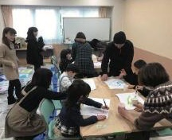
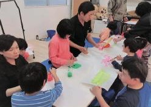
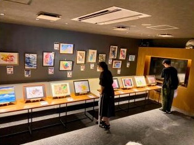
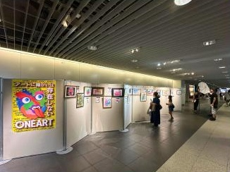
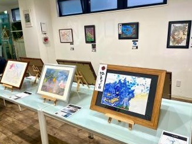
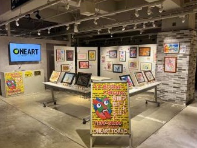
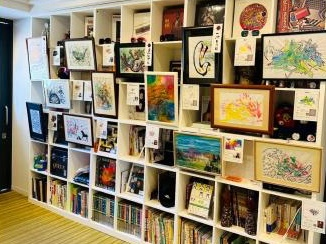

ONEART 子どもたちが描いた絵がアート作品になる
01ABOUT ONEART
アートに
障がいは
存在しない
ONEARTは障がいのある子どもたちとアーティストが一緒に作品をつくる活動です。
子どもたちが自由に描いた線や色をもとに、アーティストがその子の表現を生かした作品に仕上げます。
作品ができるまで
-

施設を訪問する
ONEARTのスタッフやアーティストが参加施設を訪問します。
-

子どもたちが絵を描く
それぞれの身体の動きに合わせて自由に描きます。筆を持つことが難しい場合は指や手を使います。
-
アーティストが作品に仕上げる
子どもたちの原画をもとにアーティストが作品を制作します。
-

展示会で発表する
完成した作品を各地のONEART展示会で発表します。
-
奨学金をご家族へ届ける
売上の60％を奨学金として絵を描いた子どものご家族へ届けます。
仮割合の対象は確認中
仮写真は資料画像から切り出して網点に加工したもの。掲載する写真と掲載許可は確認中です。
02ONEART SAPPORO
ONEART札幌
お絵描き活動2026年6月から7月頃に参加施設を訪問しました。

8.20—8.22
BAR LOUNGE RUDAN
2026年8月20日から22日
8.24—8.26
札幌駅前通地下歩行空間 チ・カ・ホ
2026年8月24日から26日
仮会場名・写真の掲載可否は確認中（写真は開催地未確認の資料画像）
仮数値は原稿案の値。対象期間・掲載許可は確認中です。
- 開催期間
- 9年間
- 展示作品 合計
- 216点
- 参加施設
- 8施設
- 2026 成約作品
- 13点
1回の展示作品 24点（仮）
ONEART SAPPORO 2026
- 6月–7月頃お絵描き活動参加施設を訪問
- 8.20–8.22展示会BAR LOUNGE RUDAN（仮）
- 8.24–8.26展示会札幌駅前通地下歩行空間 チ・カ・ホ（仮）
- 結果13点の作品が成約しました仮・掲載許可確認中



写真にポインターを乗せると元の色に戻ります。写真をタップすると元の色に戻ります。仮・開催地未確認の資料画像
これまでの参加施設
参加施設名（8施設）は、正式名称と掲載許可の確認後に表示します。仮
札幌展のメディア掲載 仮・掲載年と表記確認中
- NHK札幌
- HBC
- Yahoo!ニュース
- 札幌経済新聞
- 北海道新聞
03POLICY
活動方針
仮原稿準備中。下の言葉はすべて仮の文です
- 方針 01〔原稿準備中〕方針の言葉が入ります
ここに1つ目の方針の説明文が入ります（仮）。
- 方針 02〔原稿準備中〕方針の言葉が入ります
ここに2つ目の方針の説明文が入ります（仮）。
- 方針 03〔原稿準備中〕方針の言葉が入ります
ここに3つ目の方針の説明文が入ります（仮）。
04ORGANIZATION
運営法人一般財団法人ゆめいく
ONEARTは一般財団法人ゆめいくが運営しています。
一般財団法人ゆめいくは、家庭や社会の事情で学びや体験の機会を得にくい子どもや若者を支援する団体です。相談支援、教育支援、アート活動、農業・料理体験、イベントなどを行っています。
一般財団法人ゆめいく公式サイトを見る05WORKS
原画作品
子どもたちが描いた原画をもとに、アーティストが一点の作品として仕上げています。
左右にドラッグ。角にポインターを近づけると原画がめくれて作品が見えます。押すと原画と作品を並べて比べられます。 左右にスワイプ。タップで原画をめくると作品、もう一度タップで比べる画面が開きます。
仮画像は資料から切り出したもの（粗い）。掲載する代表作品と許可は確認中
作品をもっと見る06NEXT STEP
今後の案
仮すべて検討中。公開する項目は未定
- 01スポーツの試合会場などでのPOPUP展示検討中
- 02オンラインでの作品閲覧、成約、決済検討中
- 03作品を使ったレプリカやグッズの販売検討中
- 04パートナー企業内への販売ブース設置検討中
- 05コラボアーティストの紹介ページ検討中
上記は検討中の内容です。実施が決まった内容だけを公開します。
07PARTNERS
パートナー紹介
仮パートナー名・ロゴは掲載許可の確認後に表示。下は仮の枠です
- LOGO仮
- LOGO仮
- LOGO仮
- LOGO仮
- LOGO仮
- LOGO仮
仮扱い未定：募集をこのセクションに含めるか検討中
作品を紹介する機会を一緒につくる企業を募集しています
ONEART札幌では、作品を知ってもらう機会と作品が選ばれる機会を増やすため、活動に協力してくださる企業や団体を募集します。
パートナーについて相談するリンク未設定- 01展示会やPOPUPの開催協力
- 02社内や店舗への作品展示
- 03作品を紹介する場所の提供
- 04社員や取引先への活動紹介
- 05社内への作品販売ブース設置
- 06活動の周知
- 07事務局運営への協力
- 協力内容は企業ごとに相談して決定します。
08PURCHASE & RENTAL
作品を購入・
レンタルする
ONEARTの作品は法人と個人のどちらも購入・レンタルできます。受付中の作品と条件は作品ページで確認できます。
- STEP 01
作品ページで受付中の作品を見る
- STEP 02
購入またはレンタルの条件を確認する
- STEP 03
外部ページから申し込む
- 料金
- 仮確認中
- レンタル期間
- 仮確認中
- 申込方法
- 仮確認中